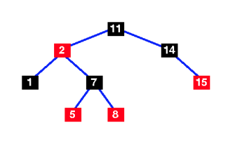
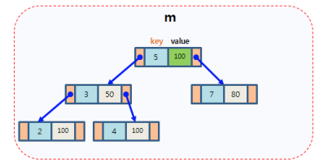
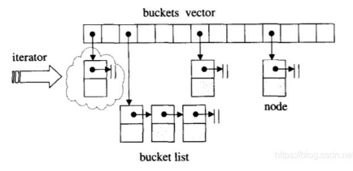

关联容器
- 使用键进行索引
set/map/multiset/multimapunordered_set/unordered_map/unordered_multiset/unordered_multimap
set/map/multiset/multimap底层使用红黑树实现unordered_xxx底层使用hash表实现（这个怪异的名字是因为 hash 的相关名称被其他厂商早已使用，所以只能起这样的名字）
set

（图片选自 www.cs.auckland.ac.nz ）
- 通常来说，元素需要支持使用
<比较大小 - 或者采用自定义的比较函数来引入大小关系
#include <iostream>
#include <set>
struct Str
{
int x;
};
bool MyComp(const Str& val1, const Str& val2)
{
return val1.x < val2.x;
}
int main()
{
// 使用默认比较器 std::less
std::set<int, std::less<int>> s{10, 3, 2, 34};
// = std::set<int> s{10, 3, 2, 34};
for (auto ptr = s.begin(); ptr!= s.end(); ++ptr)
{
std::cout << *ptr << " ";
}
std::cout << '\n';
// 2 3 10 34
// 使用 std::greater比较器
std::set<int, std::greater<int>> s1{10, 3, 2, 34};
for (auto ptr = s1.begin(); ptr!= s1.end(); ++ptr)
{
std::cout << *ptr << " ";
}
std::cout << '\n';
// 34 10 3 2
// 使用自定义比较器 MyComp
std::set<Str, decltype(&MyComp)> str({Str{3}, Str{5}}, MyComp);
}
- 插入元素：
insert/emplace/emplace_hint - 删除元素：
erase - 访问元素：
find/contains（-std=c++20） - 修改元素： extract
[!TIP] 注意： set 迭代器所指向的对象是 const 的，不能通过其修改元素
#include <iostream>
#include <set>
struct Str
{
int x;
};
bool MyComp(const Str& val1, const Str& val2)
{
return val1.x < val2.x;
}
int main()
{
std::set<Str, decltype(&MyComp)> s({Str{3}, Str{5}}, MyComp);
s.emplace(Str{100});
s.insert(Str{30});
s.erase(Str{30});
s.erase(s.begin());
std::set<int> Is{1, 3, 5, 6};
auto ptr = Is.find(1);
if (ptr != Is.end())
std::cout << *ptr << std::endl;
std::cout << Is.contains(5) << std::endl; // -std=c++20
std::cout << Is.contains(10) << std::endl;
}
map

（图片选自 mropengate.blogspot.com ）
- 树中的每个结点是一个
std::pair
#include <iostream>
#include <map>
int main()
{
std::map<int, bool> m{{3, true}, {4, false}, {6, true}};
for (auto ptr = m.begin(); ptr != m.end(); ++ptr)
{
auto p = *ptr; // std::pair<const int, bool>
std::cout << p.first << ' ' << p.second << std::endl;
}
for (auto p : m)
std::cout << p.first << ' ' << p.second << std::endl;
for (const auto& [key, value] : m)
std::cout << key << ' ' << value << std::endl;
/* 3 1
* 4 0
* 6 1
*/
}
- 键 (
pair.first) 需要支持使用<比较大小 - 或者采用自定义的比较函数来引入大小关系（参考 set）
#include <iostream>
#include <map>
struct Str{};
int main()
{
std::map<int, Str> m{{1, Str{}}, {3, Str{}}, {5, Str{}}};
// error: no match for 'operator<' (operand types are 'const Str' and 'const Str')
// std::map<Str, int> m{{Str{}, 4}, {Str{}, 6}, {Str{}, 8}};
}
- 访问元素：
find/contains/[]/at
#include <iostream>
#include <map>
int main()
{
std::map<int, bool> m;
m.insert(std::pair<const int, bool>(3, true));
m.insert({5, false});
m.erase(3);
std::cout << m[5] << std::endl; // 0 不存在则会插入一个新的节点，key 为 5
m[100];
// 现在 m 是 5 0 ，100 0
std::cout << m.at(5) << std::endl; // 0 如果不存在则会抛出异常 （内存越界）
auto s = m.find(3);
if (s != m.end())
{
std::cout << "Found" << s->first << s->second << std::endl;
}
else
{
std::cout << "Not Found!\n";
}
std::map<int,char> example = {{1,'a'},{2,'b'}};
for(int x: {2, 5}) {
if(example.contains(x)) {
std::cout << x << ": Found\n";
} else {
std::cout << x << ": Not found\n";
}
}
}
[!TIP]
map迭代器所指向的对象是std::pair，其键是const类型[]操作不能用于常量对象
#include <iostream>
#include <map>
void fun(const std::map<int, int>& m)
{
// 编译器运行，但是其中没有找到键 3
// m[3];
// error: passing 'const std::map<int, int>' as 'this' argument discards qualifiers [-fpermissive]
// 可以这样写
auto ptr = m.find(3);
if (ptr != m.end())
{
std::cout << ptr->second << std::endl;
}
}
int main()
{
std::map<int, int> m;
m.insert(std::pair<const int, int>(3, 100));
fun(m);
}
multiset / multimap
- 与 set / map 类似，但允许重复键
- 元素访问
- find 返回首个查找到的元素
- count 返回元素个数
- lower_bound / upper_bound / equal_range 返回查找到的区间
#include <iostream>
#include <set>
int main()
{
std::set<int> s{1, 3, 5, 1};
for (auto i : s)
std::cout << i << ' '; // 1 3 5 1
std::cout << '\n';
std::cout << s.count(1) << std::endl; // 1
std::multiset<int> s1{1, 3, 5, 1};
for (auto j : s1)
std::cout << j << ' '; // 1 1 3 5
std::cout << '\n';
auto ptr = s1.find(1); // 第一个 1 的指针
++ptr;
std::cout << *ptr << std::endl; // 1
std::cout << s1.count(1) << std::endl; // 2
auto bd = s1.lower_bound(1);
auto ed = s1.upper_bound(1);
for (auto ptr = bd; ptr != ed; ++ptr)
{
std::cout << *ptr << ' '; // 1 1
}
std::cout << '\n';
auto [b, e] = s1.equal_range(1); // std::pair
for (auto ptr = b; ptr != e; ++ptr)
{
std::cout << *ptr << ' '; // 1 1
}
}
unordered_set / unordered_map / unordered_multiset / unordered_multimap

- 与
set/map相比查找性能更好 - 但插入操作一些情况下会慢
- 其键需要支持两个操作
- 转换为
hash值 - 判等
- 转换为
- 除
==，!=外，不支持容器级的关系运算 - 但
==，!=速度较慢 - 自定义
hash与判等函数
#include <iostream>
#include <unordered_set>
struct Str
{
int x;
};
size_t MyHash(const Str& val)
{
return val.x;
}
bool MyEqual(const Str& val1, const Str& val2)
{
return val1.x == val2.x;
}
class MyHashFunction
{
public:
size_t operator()(const Str& t) const
{
return t.x;
}
};
int main()
{
// 在内部，元素并不以任何特别顺序排序，而是组织进桶中。元素被放进哪个桶完全依赖其值的哈希。
// 这允许对单独元素的快速访问，因为哈希一旦确定，就准确指代元素被放入的桶。
std::unordered_set<int> s{3, 1, 4, 6, 1};
for (auto p : s)
{
std::cout << p << std::endl; // 6 4 1 3
}
std::unordered_set<Str, decltype(&MyHash), decltype(&MyEqual)> e{1, MyHash, MyEqual};
e.insert(Str{3});
// decltype(&MyHash) -> size_t (*)(const Str& val)
std::unordered_set<Str, MyHashFunction> us;
}